How to play Digit Stack
You build each answer one box at a time, the way you would write it on paper. All you need is the keyboard.
Play Digit Stack1. Pick your year and an area
Press ← and → to choose your school year. Then press a key for what to practise. The first four are for working out sums: 1 divide, 2 multiply, 3 add and 4 subtract. W is word problems: maths in a story. The next six are more maths: 5 number, 6 fractions, 7 measures, 8 shape, 9 data and 0 algebra.
Each one moves up on its own. You could be on Year 5 for fractions and still on Year 4 for dividing. Each book shows its year and whether you are learning or being tested.
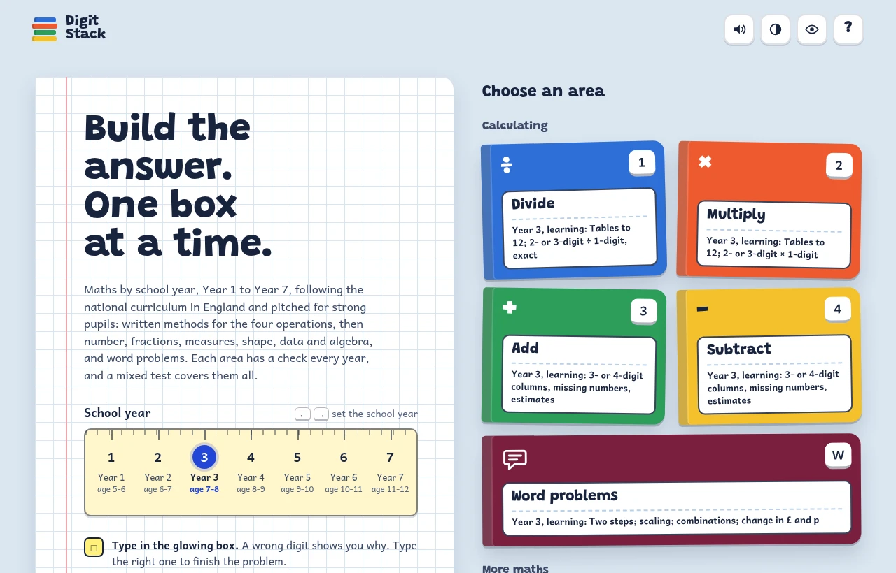
2. Watch an example first
The first time you open a year, the game shows you how it is done. It fills in each box itself and tells you why. Press → or Enter for the next step and ← to go back. When it has finished, it is your turn.
Already know it? Press N to skip to your turn. While you are learning, press W to watch the example again. You come back to the same box.

3. Type in the glowing box
Your box is the yellow one with a pencil next to it. Read what it says next to the sheet, work it out, then type one digit. The next box lights up by itself.
The numbers you type are blue. The numbers in the question are black.
Written sums fill from the right, starting with the ones, just like on paper.
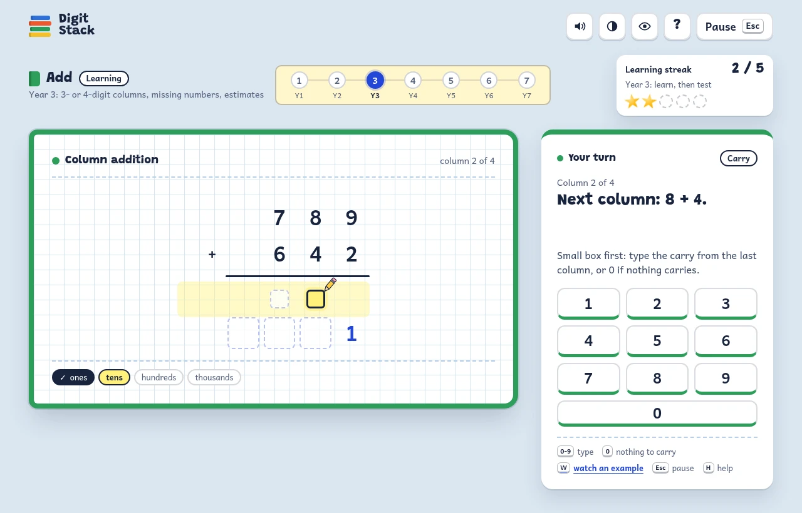
4. Small boxes: a number or 0
Small boxes are for the little numbers you write while you work: a carry when you add or multiply, or what is left over in short division.
The game stops at every small box, even when there is nothing to write there. So you always have to think: is there a carry? Type it, or type 0 if there is none. A 0 is not written on the sheet. The box just turns grey to show you checked it.
Answer rows work the same way. There is always a box in front for a carry, and in division there is a box over every digit. If nothing goes there, type 0. A number never starts with 0, so that 0 is not written: when the row is done, the box stays empty. In long multiplication, the second row starts with a 0 that holds the ones place. You write it. From Year 4, every division has an R. Type what is left over, or 0 if nothing is.
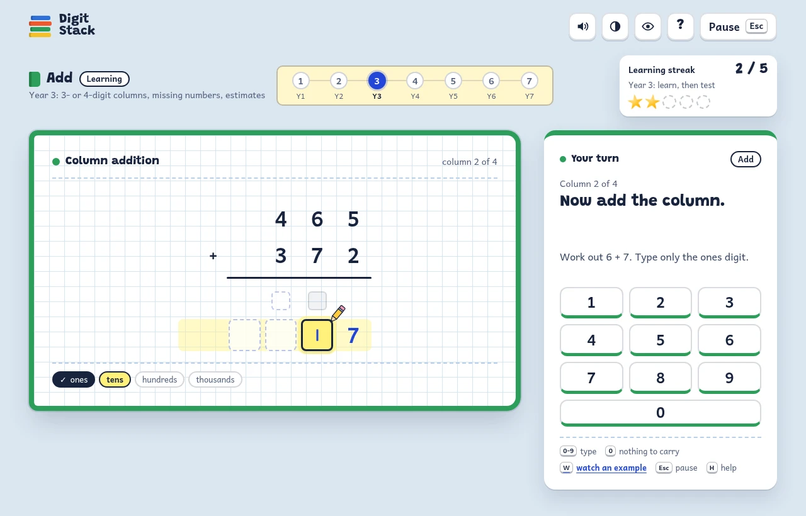
5. Taking away: exchange a ten
When you subtract, look at each column. If the top digit is smaller than the one under it, type 1 in its small box to exchange: 1 from the next column on the left becomes 10 in this column (1 ten is 10 ones; with decimals, 1 one is 10 tenths). The box shows the new number, like 12, and the old digit is crossed out.
Then the game asks how many are left in the column you took the ten from. If the top digit is big enough, type 0 instead.
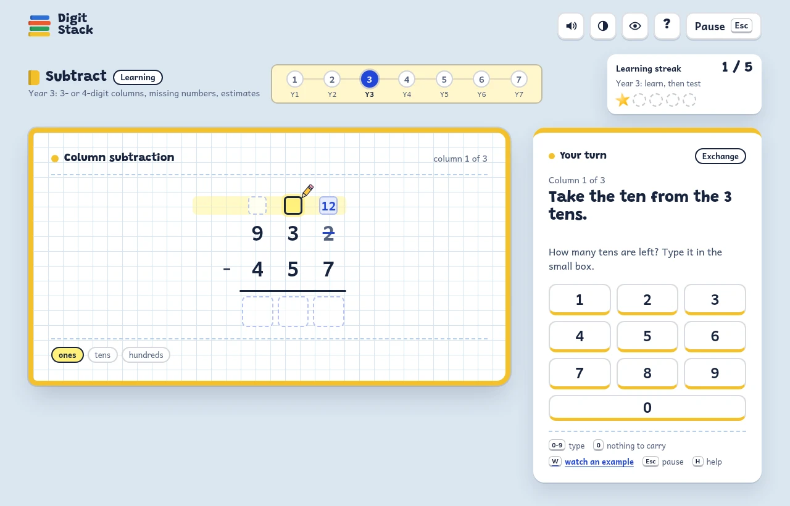
6. Got one wrong? Fix it
If you type a wrong digit, the box turns red. The game tells you why and shows the digit the box needs. Type the right one to keep going and finish the sum.
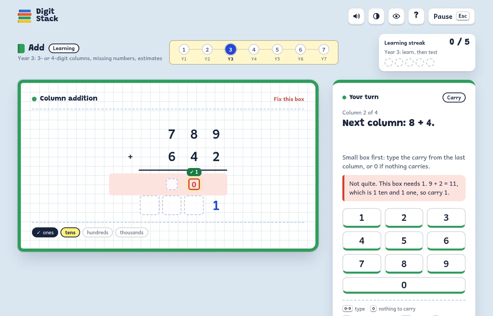
7. Clean rounds
A clean round is a sum with no mistakes. Each one puts a gold star on the sticker chart at the top right. A mistake clears the chart back to 0, so take your time.
Get enough clean rounds in a row and you have finished learning that year. How many depends on how long the sums are: 10 for short ones, 5 for medium ones and 3 for long multiplication and long division.
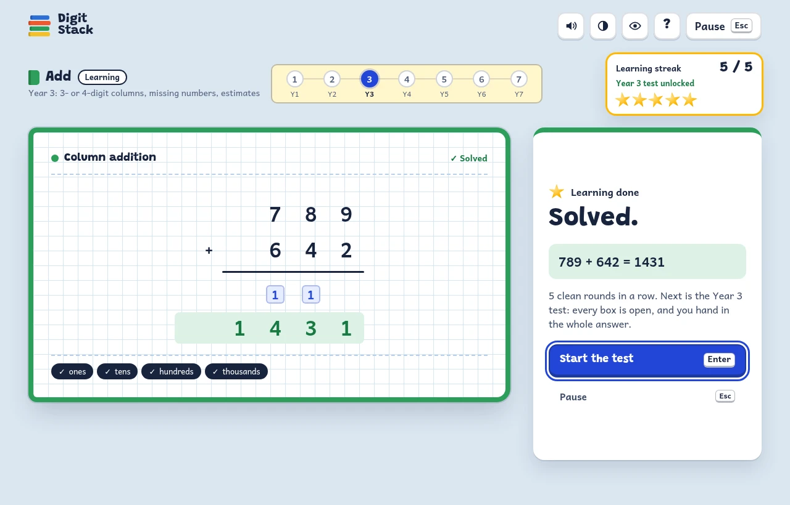
8. The test
In the test, every box is open and there are no hints. You choose where to go:
- Move with the arrow keys. Tab goes to the next box in the order you would work.
- Type to fill a box. Backspace clears it.
- Use the small boxes for your working if you want. Only the answer is marked.
- Press Enter to hand in. If you left an answer box empty, the game asks once more first. A box in front of a number can stay empty.

If an answer is wrong, the game marks your boxes and shows the right answer with all the working. Your count goes back to 0. Then press Enter and the game shows you how to solve it, one box at a time, with the reason for each step: → or Enter for the next step, ← to go back. After the last step, Enter gives you the next sum. N skips straight to the next sum.
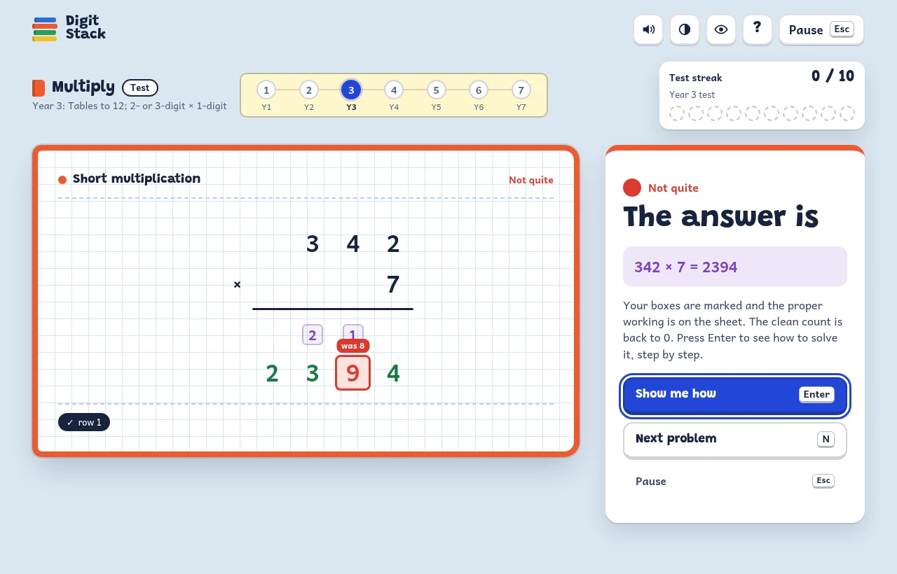

9. Passing the year
Get enough clean tests in a row and you pass the year. Then the next year starts, with learning first.
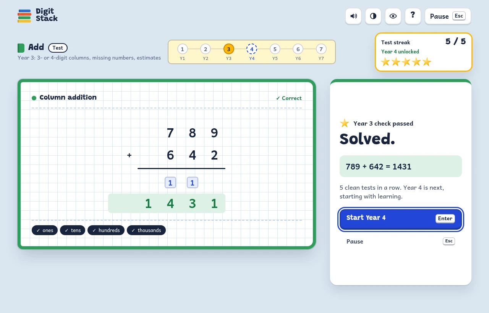
10. Answers below zero
From Year 4, some adding and subtracting answers are below zero. These answers start with a sign box. Press − if the answer is below zero. If it is not, type the first digit as usual.
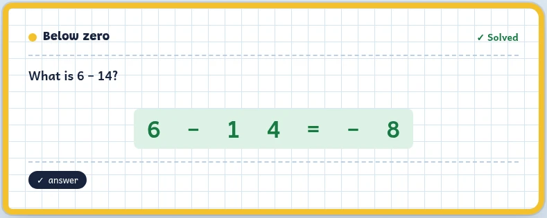
11. Fractions, decimals, pictures and choices
Not every question is a written sum. Some come with a picture, like a clock, a chart, a shape or a protractor. You still type every answer, and anything already written in the answer, like a decimal point, a unit or a colon in a time, is done for you.
- Fractions: type the top number first, then the bottom one. When the question says “simplest form”, divide the top and bottom by the same number until you can’t any more.
- Comparing: press <, = or >. You can also press , for < and . for >, because they are on the same keys.
- Choices: some answers are words, like acute or kite. Each one has a number under the sheet; type the number of your answer. Yes or no questions are 1 for yes and 0 for no.
- Coordinates: type across first, then up or down. From Year 6 each number has its own sign box.
- Word problems: read the story at the top of the page. A problem with more than one step has a line for each step. While learning, you fill in each line in turn; in a test only the answer line is marked, but the other lines are there for your working.
- Symbols and letters: a shape like ★ or a letter like n stands for a number. The page tells you which number, or asks you to find it, and it can be a different number in every question. In one question, the same shape is always the same number.
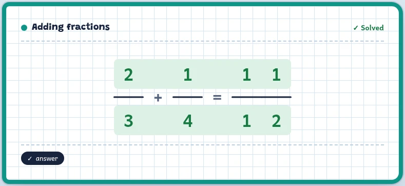
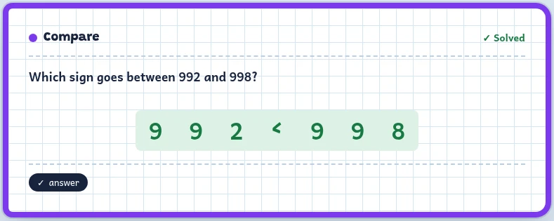
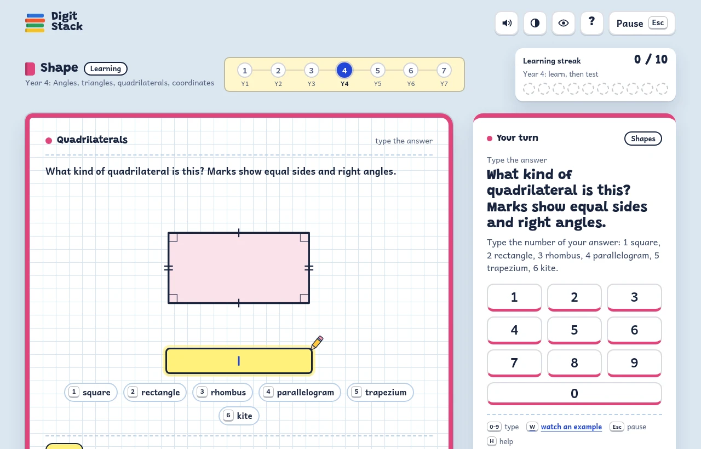
Drawing
Some questions ask you to draw: set the hands on a clock, shade a fraction, mark a number on a number line, draw a line on a ruler, plot corners on a grid, draw bars, turn a protractor arm, draw a pie chart. Use the keys:
- The arrow keys move the pencil, turn a hand or an arm, or make a bar taller or shorter. Hold Shift for a bigger step.
- Space shades the part you are on, or puts a corner where the pencil is. Backspace takes the last corner away.
- Press Enter when the drawing is done. While learning, the game checks each step and tells you how to fix it; a corner on a grid is checked as soon as you put it down.
- On a protractor, use the scale that starts at 0 on the base arm, just as on paper.
- Ruler and compass (Year 7): the arrows move between points, including where arcs cross. + and − open and close the compass (the dashed circle shows how wide), Space draws an arc, and L at one point then L at another draws a line with the ruler.
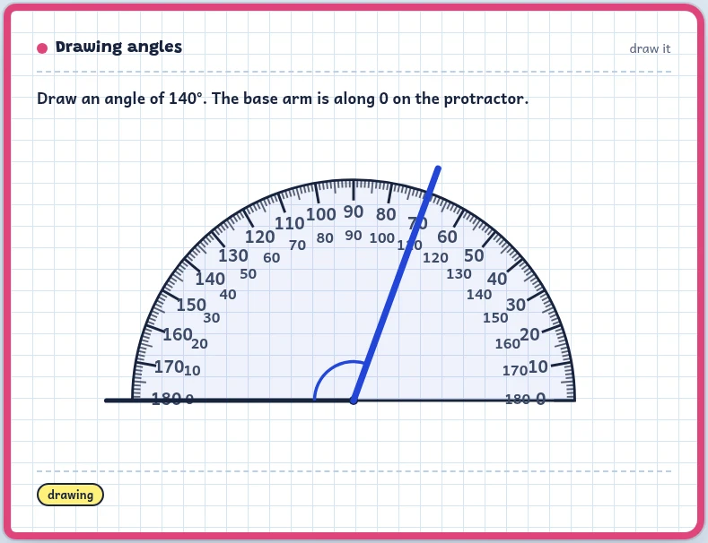
12. The mixed test
Press R on the start screen for a mixed test. It has questions from all eleven areas for your school year. Choose with the arrow keys:
- Questions: 10, 20, 30, 40 or 50.
- Time limit: none, or from 10 to 90 minutes.
- How hard: easy, medium or hard. Harder questions are longer, with more digits and more decimal places.
Press Enter to start. Each question works like a test: fill the boxes, then press Enter or N for the next question. P goes back, and the numbers under the page jump to any question, so you can skip a question and come back to it, or change an answer, until you hand in. Answered questions are filled in on that row of numbers.
Press E to hand in the test. The game first tells you which questions have no answer; press E again to hand it in, or keep going. Nothing is marked until then. The clock keeps going even if you pause or close the game, just like a real test. Pause with Esc; E there hands in straight away, and Q goes back to the start so you can carry on later with R.
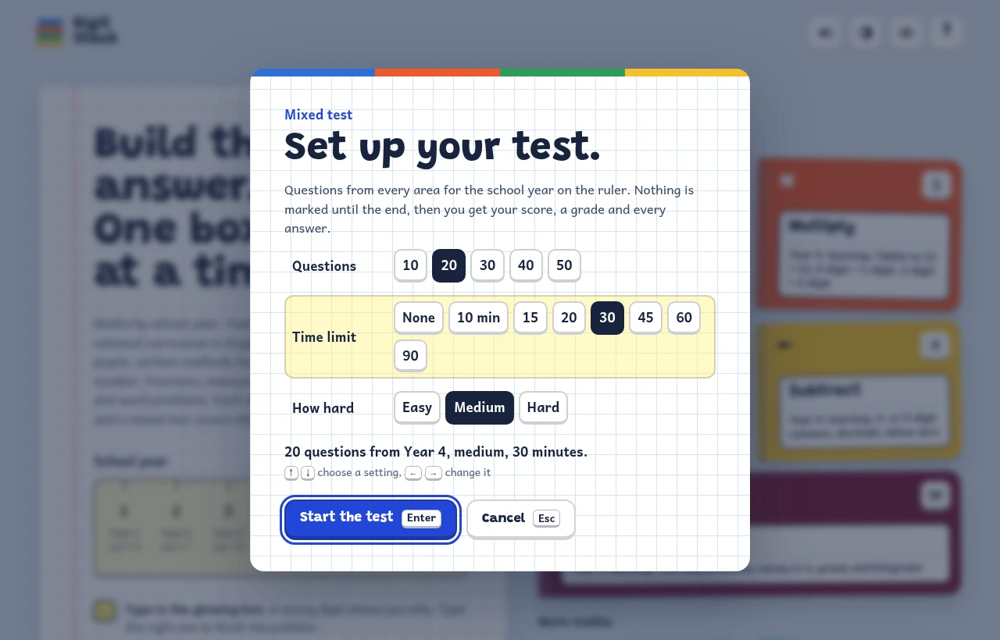
At the end you see your score, a grade and every answer. Press Enter and the game goes over each question you missed, showing how to solve it step by step, then brings you back to your results; F finishes without going over them. The grades go A+, A, A−, B+, B, B−, C+, C, C− and D. Under half right is an F: not a pass yet. Use ← and → to look at each question with its marks, then press Enter to finish.
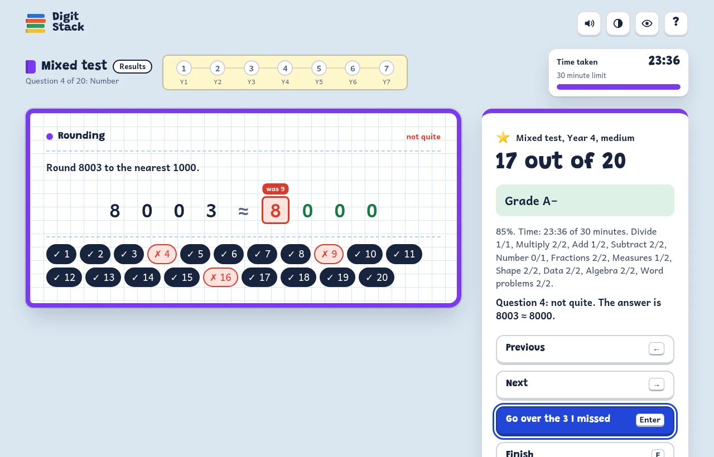
13. Taking a break
Press Esc to pause. You can also close the game whenever you like. When you open it again, you are back at the same box with the same count.
A mistake you made before closing still counts, so closing the game does not wipe it out.

On a tablet or phone you can tap the number keys on the screen instead.

14. Light, dark and colours
Press T to switch between automatic, light and dark. Automatic matches your device. Press C for colours that are easier to tell apart if you are colour-blind: right answers turn blue with a tick, and wrong ones orange.
15. All the keys
| Key | What it does |
|---|---|
| ← → | Pick your school year (on the start screen) |
| 1 2 3 4 | Divide, multiply, add, subtract (on the start screen) |
| 5 6 7 8 9 0 | Number, fractions, measures, shape, data, algebra (on the start screen) |
| W | Word problems (on the start screen) |
| Space | In a drawing: shade a part, or put a corner down |
| Shift + arrows | In a drawing: a bigger step |
| R | Mixed test (on the start screen) |
| N P | Next or previous question in a mixed test |
| E | Hand in a mixed test (press it twice) |
| 0 to 9 | Type a digit |
| 0 | Nothing to carry, exchange or leave over, in a small box |
| − | The answer is below zero |
| < = > | Compare two numbers (, and . work for < and >) |
| Enter | Go on to the next sum, or hand in a test. After a sum with a fix, Enter tries the same sum again. |
| N | A new sum instead, after one with a fix, or skip an example |
| W | Watch the example again (while learning) |
| → ← | Next or previous step of an example |
| Arrows, Tab | Move between boxes in a test |
| Backspace | Clear a box in a test, or take the last corner of a drawing away |
| Esc | Pause |
| Q | Quit to the start screen (when paused) |
| E | End a mixed test now (when paused) |
| H | Help |
| S | Sound on or off |
| T | Automatic, light or dark |
| C | Colour-blind friendly colours |